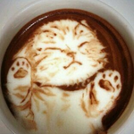

Macchigato
Se você gosta de gatos e cafeterias, o Macchigato é o lugar ideal. Aqui você terá não apenas a experiência gastronomica de primeira, mas também será muito bem acolhido por nossos "funcionários felinos".
Todos os gatinhos presentes em nosso café estão disponíveis para adoção, além deles temos a visita de diferentes ONGs aos fins de semana, para uma feira de adoção. Nosso objetivo, além de satisfazer nossos clientes, é dar um lar para gatos que não possuem um.
Lembre que seus pets são bem vindos.
Nosso estabelecimento
Nosso estabelecimento está localizado no Batel - Curitiba
Nossas opções mais famosas:
- Cupcake
- Cheesecake
- Café
- Cappuccino
- Macchiato